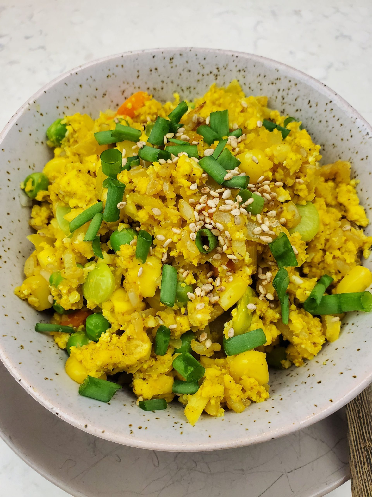

Fried Rice and Cauliflower
Amount per 2 servings: Calories: 444 | Total fat: 16g | Protein: 32g | Carbohydrates: 46g
So recipe no.2 for my high protein, low calorie recipes is this Fried Rice with Cauliflower meal~
Notice that I did not say “cauliflower fried rice” — that's because I do not believe in completely eliminating actual rice! Let's just say I'm Asian and I do not believe that cauliflower can be a substitute for rice – I mean, come on, rice is life! However, I still think cauliflower would make a fantastic addition to fried rice, to really add a ton of volume to your meal but also add those fantastic nutrients. Also, I added in some tofu for extra protein — YUM!

Ingredients 2-4 servings
- 2 C Cauliflower
- 1/2 Onion
- 1 block firm/extra firm tofu
- 3 tbsp Scrambled Tofu Seasoning
- 2 C frozen Veggies
- Oil
- Soy Sauce
- Sesame Oil
- Green Onion Garnish
Steps to Make
- Place cauliflower into a food processor and process unil consistency is crumbly. Transfer to a plate and set aside
- In a large pan or wok, heat oil over medium high heat. Saute onions and garlic untill fragrant
- Add in crumbled up tofu and let it cook for 3-5 minutes or until the tofu has browned a little.
- Add in scrambled tofu seasoning and mix well.
- Add in the frozen mixed vegetables, cauliflower, and cooked rice. Mix until everything is well combined.
- Add soy sauce and mix again. Turn off the heat and mix in some toasted sesame oil.
- Transfer some into a bowl, top with chopped green onions and sesame seeds, and enjoy!